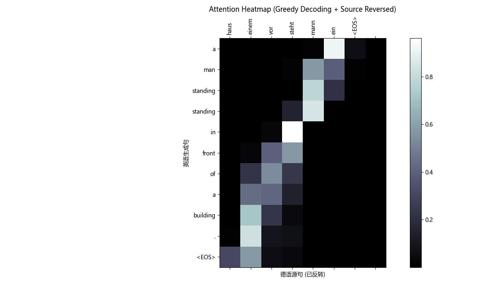

01
Agent Harness · Human-in-the-loop
JobHunter Agent Harness
围绕持久候选人记忆、职位采集、结构化排序、申请材料草拟与评测构建的求职 Agent。所有外部动作都停在人工批准边界之前。
- Multi-agent orchestration
- SQLite memory
- 50-job benchmark
Portfolio / 2026Shanghai · UTC+8
我是东云。关注 Coding Agent、Agent Harness 与可解释的机器学习系统；偏爱把研究笔记变成能运行、能测试、能部署的产品。
RESEARCH → HARNESS → PRODUCT
不只展示结果，也展示边界、评测、失败恢复和系统真正跑起来的路径。
Selected work
Agent Harness · Human-in-the-loop
围绕持久候选人记忆、职位采集、结构化排序、申请材料草拟与评测构建的求职 Agent。所有外部动作都停在人工批准边界之前。
Protocol Adapter · Tool Calling
在 OpenAI Responses 与 DeepSeek Chat Completions 之间完成流式事件、并行工具调用和多轮上下文转换，并提供受限 MCP 扫描与补丁工作流。

Learning Tool · Trace Visualization
把双指针、递归栈、DP 表格与图搜索的执行轨迹变成可回放的可视化故事，为非科班学习者解释“代码为什么这样动”。
SFT · Evaluation
面向噪声数学描述到规范 LaTeX 的 LoRA SFT。重点不只在训练，还包括 AST 级评测、格式一致性与通用能力保留检查。
Project index
这个分类暂时没有公开项目。
Physical artifact
参数化 CAD、自动导出 STL/STEP、浏览器 3D 预览与形状相似度检查，让生成式设计离可制造结果更近一步。
查看 CAD pipeline ↗About
我关心模型怎样穿过 provider、router、tool schema、权限边界、sandbox、日志和评测，最终成为一个可信的工作系统。非传统 CS 路径让我更在意技术与人的真实交互，以及“能否长期使用”而不只是 demo 是否漂亮。
Build small. Test the boundary. Ship the real thing.
jzhou2409324124@gmail.com ↗